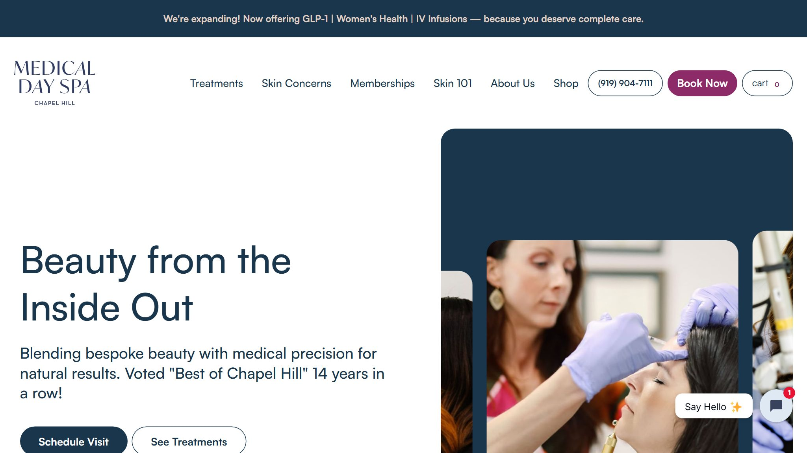
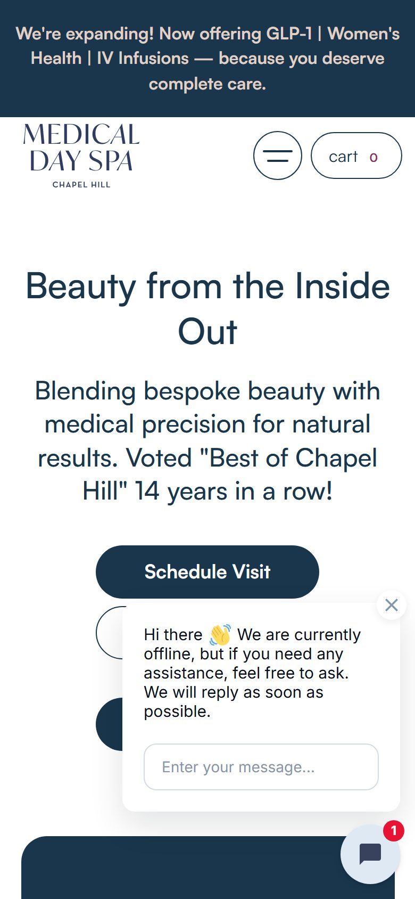

What this looks like built
Two working examples — not mockups. Both are live and clickable.


Private website conversion audit
An independent review of how the website performs for a first-time, full-fee patient — what it does well, and where attention is lost before a booking is made.
This is one of the stronger sites in the current review set, and the reason is proof. “Voted "Best of Chapel Hill" 14 years in a row” sits in the second line of the first screen, followed by 15+ years in business, 8,000+ satisfied patients and one locally owned boutique. Those are specific, checkable and rare. “Schedule Visit” is a proper booking button rather than a browse link, the telephone number is in the navigation, and the treatment writing is genuinely educational — the description of subcision explains the mechanism rather than listing a benefit.
One thing undoes a share of that work. A chat window opens by itself over the first screen, covering the two buttons beneath Schedule Visit, and its opening line is “We are currently offline, but if you need any assistance, feel free to ask.” The first interactive thing a new patient meets announces that nobody is there, and it does so while sitting on top of the buttons.
Evidence limitation: this review covers the homepage on desktop and mobile plus publicly visible page source. Individual treatment-page depth and technical performance were not assessed, so the score is normalised across the six categories that were. Nothing here uses private analytics, and no traffic or revenue figures have been estimated.
Normalised across six assessed categories (90 points available). Among the highest scores in this set. The recommendations are refinements to a site that already works, not repairs.
| Category | Score | Status | One-line finding |
|---|---|---|---|
| First impression & positioning | 14/20 | Solid | Strong proof on the first screen behind a headline that names nothing specific. |
| Trust & authority placement | 15/20 | Solid | A 14-year award, 15+ years and 8,000+ patients; no clinician named. |
| Booking journey & conversion | 16/20 | Solid | Schedule Visit is unmistakable, with the number in the navigation. |
| Patient decision psychology | 9/15 | Gap | An uninvited chat window interrupts at the moment of decision. |
| Mobile experience | 6/10 | Gap | The chat window covers two of the three first-screen buttons. |
| Local / public signals | 4/5 | Solid | Chapel Hill in the logo and again in the award; no meta description. |
| Treatment content quality | — | Not assessed | Excluded from the score. |
| Technical / performance | — | Not assessed | Excluded from the score. |
Several of these are ahead of almost every practice in this review, and they are worth protecting while the chat window is dealt with.


Evidence: At 390×844 a chat panel appears without being asked for, positioned over the first screen. It reads “Hi there 👋 We are currently offline, but if you need any assistance, feel free to ask. We will reply as soon as possible.” It covers the two buttons directly beneath Schedule Visit, and a notification badge shows 1 unread message.
Why it matters to a full-fee patient: Two costs, and the second is the larger. It physically covers buttons the practice paid to put there. And the first sentence a new patient reads from the practice is that it is closed — placed on top of an award for being the best in town for fourteen years. The badge showing an unread message also implies someone wrote to them personally, which is not the case.
Recommended: Set the widget to stay closed until it is clicked, and change the offline wording to something that still offers a route — “Leave a message and we will reply in the morning, or book now” with the booking link. Never let it open over the buttons.
Evidence: “Beauty from the Inside Out” is the largest text on the page, above “Blending bespoke beauty with medical precision for natural results.”
Why it matters to a full-fee patient: The line would suit any aesthetic practice anywhere. The award beneath it is doing all the identifying work, and the logo carries Chapel Hill in small type. A visitor arriving from a search for a specific treatment gets a sentiment first and their answer second.
Recommended: Give the headline the specifics and let the sentiment support it — the award and the town are already written, they simply sit in the smaller line.
Evidence: The homepage has a title tag — “Medical Day Spa of Chapel Hill | Med Spa Aesthetics & Botox” — but no description meta tag.
Why it matters to a full-fee patient: The description is the two lines beneath the practice name in search results, and it is often read before anyone reaches the site at all. With none supplied, Google assembles a fragment from the page, which frequently pulls navigation labels or the cookie notice. Fourteen years of awards deserve better than an accidental sentence.
Recommended: Write one line of about 155 characters naming Chapel Hill, the main treatments and the award. It is the cheapest improvement available and it works on every search.
Evidence: The first screen names the practice, the award and the patient count, but no clinician, injector or supervising physician, and no photograph of one.
Why it matters to a full-fee patient: The institutional proof here is excellent and answers “is this a real, established business”. It does not answer “who will be holding the needle”, which is the question that decides an injectables booking. Those are different reassurances and the second is missing.
Recommended: Name the lead injector with qualification and photograph near Schedule Visit. With 8,000 patients behind them, the individual is likely to be a genuine draw.
| Principle | In plain English | What the site shows |
|---|---|---|
| Familiarity Jacob's Law | People expect a site to behave like the others they use. | Conventional and well built. The chat window opening unprompted is the one departure. |
| Reachability Fitts's Law | Important actions should be big and easy to thumb. | Schedule Visit is a generous target. The two buttons beneath it are covered. |
| Proximity of proof | Reassurance has to sit where the doubt is. | Very strong — the award sits between the headline and the booking button, which is the right place for it. |
| Authority | Real expertise, visible near decisions. | Institutional authority is well established. Individual clinical authority is absent. |
| Decision clarity | One obvious next step. | Schedule Visit is clearly primary — until a chat window opens on top of the alternatives. |
| Helpful defaults | Sensible pre-selections that serve the patient. | Explaining how a treatment works rather than what it promises is a genuinely helpful default. |
| Believability Pratfall Effect | Balanced, realistic communication is trusted more than perfection. | Excellent. “14 years in a row” and “8,000+ patients” are the sort of specific, slightly awkward numbers that invented businesses never produce. |
This is a model, not a measurement. Every figure below starts as an illustrative placeholder — replace them with your own numbers and the scenarios update immediately. Nothing here is drawn from your analytics, and no result is predicted or guaranteed.
Proposed enquiry rate 2.0%
—
additional first-visit revenue / month
Proposed enquiry rate 2.5%
—
additional first-visit revenue / month
Proposed enquiry rate 3.0%
—
additional first-visit revenue / month
Every step, shown in full:
current enquiries = visitors × current rate → —
improved enquiries = visitors × proposed rate
additional attended = (improved − current) × booking % × attendance %
additional revenue = additional attended × average first-visit value
Only the proposed enquiry rate changes between the three scenarios; every other input stays as you entered it. This is an illustrative scenario built on stated assumptions — not a forecast, a projection or a guarantee. Actual results depend on factors no website review can measure.
| Window | Focus | Actions |
|---|---|---|
| Days 1–14 | Quick wins | Stop the chat window opening on its own and move it clear of the buttons; rewrite the offline message to offer booking. Add a meta description. Put the town and treatments into the headline. |
| Days 15–45 | Trust & conversion | Name the lead injector with photograph and qualification beside Schedule Visit. Add the Google rating and review count alongside the award. |
| Days 46–90 | Authority & measurement | Extend the treatment writing — it is already better than most and is worth building on for search. Promote the GLP-1 and women's health expansion beyond the announcement bar. Begin measuring enquiry-to-booking so the calculator figures above become yours. |
This review is based on the public homepage of chapelhilldayspa.com viewed on 14 August 2026 at 1366×768 and 390×844, page source retrieved the same day, and publicly visible business information. This review assessed the homepage at 1366×768 and at 390 pixels wide, together with publicly visible page source. Individual treatment-page depth and technical performance were not assessed and are excluded from the score rather than estimated; the total is normalised across the six categories reviewed (90 points available). Chat widgets behave differently by time of day and for returning visitors, so the message described here is the one shown during this review.
No private analytics, Google Business Profile insights, booking data or revenue figures were accessed, and none have been estimated. Findings labelled Observed are directly visible; findings labelled Interpretive are professional assessment and are identified as such. No legal, HIPAA, medical board or clinical compliance judgement is offered or implied — those require professional review. Figures in the growth scenario are illustrative placeholders supplied by this report, not measurements of your practice.
Most of what is above can be done by your existing web team, and this report is yours to use whether or not we ever speak.
Where the gaps are structural rather than cosmetic — booking that lives on someone else's platform, trust signals with nowhere to sit, no loop that brings a patient back after treatment — those are the problems we build for.
Book a 20-minute conversation →
Two working examples — not mockups. Both are live and clickable.